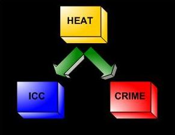

The Future
- Futures Portal
- One Future Vision
- Post Human Futures
- Distant Future
- Other Visions
- Future Homo Sapiens
- Future Quotes
Future Studies
Sociology and Sociological Methods
In pusuit of a more deliberate and positive future, a number of methods, procedures, and disciplines are needed to study, formulate, and enact positive change. One of the most important of these is sociology, or the study of humans in social settings/interactions. Below is an introduction to the science of sociology.
Please see our Future Studies Methodologies page for more information on the study of the future.
Quicklinks on this Page
Introduction
This page introduces the methods employed by sociologists in their study of social life. It is not a chapter on statistics nor does it detail specific methods in sociological investigation. The primary aim is to illustrate how sociologists go beyond common sense understandings in trying to explain or understand social phenomena. Understanding current social behavior is an important element in trying to predict the ways in which technology and our changing human natures might impact the way we interact with one another in the future.
Sociology vs. Common Sense
Common sense, in everyday language, is understood as "the unreflective opinions of ordinary people" or "sound and prudent but often unsophisticated judgment" (Merriam-Webster) . Sociology and other social sciences have been accused of being nothing more than the sciences of common sense. While there is certainly some basis for the accusation - some of the findings of sociology do confirm common sense understandings of how society seems to work - sociology goes well beyond common sense in its pursuit of knowledge. Sociology does this by applying scientific methodology and empiricism to social phenomena. It is also interesting to note that common sense understandings can develop from sociological investigations. Past findings in sociological studies can make their way into everyday culture, resulting in a common sense understanding that is actually the result of sociological investigation.
The Development of Social Science
In ancient philosophy, there was no difference between the liberal arts of mathematics and the study of history, poetry or politics - only with the development of mathematical proof did there gradually arise a perceived difference between scientific disciplines and the humanities or liberal arts. Thus, Aristotle studied planetary motion and poetry with the same methods, and Plato mixed geometrical proofs with his demonstration on the state of intrinsic knowledge.
This unity of science as descriptive remained, for example, in the time of Thomas Hobbes who argued that deductive reasoning from axioms created a scientific framework; his book, Leviathan, was a scientific description of a political commonwealth. Within decades of Hobbes' work a revolution took place in what constituted science, particularly with the work of Isaac Newton in physics. Newton, by revolutionizing what was then called natural philosophy, changed the basic framework by which individuals understood what was scientific.
While Newton was merely the archetype of an accelerating trend, the important distinction is that for Newton the mathematical flowed from a presumed reality independent of the observer and it worked by its own rules. For philosophers of the same period, mathematical expression of philosophical ideals were taken to be symbolic of natural human relationships as well: the same laws moved physical and spiritual reality. For examples see Blaise Pascal, Gottfried Leibniz and Johannes Kepler, each of whom took mathematical examples as models for human behavior directly. In Pascal's case, the famous wager; for Leibniz, the invention of binary computation; and for Kepler, the intervention of angels to guide the planets.
In the realm of other disciplines, this created a pressure to express ideas in the form of mathematical relationships. Such relationships, called Laws after the usage of the time (see philosophy of science) became the model that other disciplines would emulate. In the late 19th century, attempts to apply equations to statements about human behavior became increasingly common. Among the first were the Laws of philology, which attempted to map the change over time of sounds in a language. In the early 20th century, a wave of change came to science that saw statistical study sufficiently mathematical to be science.
The first thinkers to attempt to combine scientific inquiry with the exploration of human relationships were Sigmund Freud in Austria and William James in the United States. Freud's theory of the functioning of the mind and James' work on experimental psychology had an enormous impact on those who followed.
With the rise of the idea of quantitative measurement in the physical sciences (see, for example Lord Rutherford's famous maxim that any knowledge that one cannot measure numerically "is a poor sort of knowledge"), the stage was set for the conception of the humanities as being precursors to social science.
The Scientific Method
A scientific method or process is considered fundamental to the scientific investigation and acquisition of new knowledge based upon verifiable evidence. In addition to employing the scientific method in their research, sociologists explore the social world with several different purposes in mind. Like the physical sciences (i.e., chemistry, physics, etc.), sociologists can be and often are interested in predicting outcomes given knowledge of the variables and relationships involved. This approach to doing science is often termed positivism. The positivist approach to social science seeks to explain and predict social phenomena, often employing a quantitative approach. But unlike the physical sciences, sociology (and other social sciences, specifically anthropology) also often seek for understanding social phenomena. Max Weber labeled this approach Verstehen, which is German for understanding. In this approach, which is similar to ethnography, the goal is to understand a culture or phenemon on its own terms rather than trying to predict it. Both approaches employ a scientific method as they make observations and gather data, propose hypotheses, and test their hypotheses in the formulation of theories. These steps are outlined in more detail below.
Sociologists use observations, hypotheses and deductions to propose explanations for social phenomena in the form of theories. Predictions from these theories are tested. If a prediction turns out to be correct, the theory survives. The method is commonly taken as the underlying logic of scientific practice. A scientific method is essentially an extremely cautious means of building a supportable, evidenced understanding of our natural world.
The essential elements of a scientific method are iterations and recursions of the following four steps:
● Characterization (operationalization or quantification, observation and measurement)
● Hypothesis (a theoretical, hypothetical explanation of the observations and measurements)
● Prediction (logical deduction from the hypothesis)
● Experiment (test of all of the above; in the social sciences, true experiments are often replaced with a different form of data analysis that will be discussed in more detail below)
Characterization
A scientific method depends upon a careful characterization of the subject of the investigation. While seeking the pertinent properties of the subject, this careful thought may also entail some definitions and observations; the observation often demands careful measurement and/or counting.
The systematic, careful collection of measurements or counts of relevant quantities is often the critical difference between pseudo-sciences, such as alchemy, and a science, such as chemistry. Scientific measurements taken are usually tabulated, graphed, or mapped, and statistical manipulations, such as correlation and regression, performed on them. The measurements might be made in a controlled setting, such as a laboratory, or made on more or less inaccessible or unmanipulatable objects such as human populations. The measurements often require specialized scientific instruments such as thermometers, spectroscopes, or voltmeters, and the progress of a scientific field is usually intimately tied to their invention and development.
Measurements demand the use of operational definitions of relevant quantities (a.k.a. operationalization). That is, a scientific quantity is described or defined by how it is measured, as opposed to some more vague, inexact or idealized definition. The operational definition of a thing often relies on comparisons with standards: the operational definition of mass ultimately relies on the use of an artifact, such as a certain kilogram of platinum kept in a laboratory in France.
The scientific definition of a term sometimes differs substantially from its natural language usage. For example, sex and gender are often used interchangeably in common discourse, but have distinct meanings in sociology. Scientific quantities are often characterized by their units of measure which can later be described in terms of conventional physical units when communicating the work.
Measurements in scientific work are also usually accompanied by estimates of their uncertainty. The uncertainty is often estimated by making repeated measurements of the desired quantity. Uncertainties may also be calculated by consideration of the uncertainties of the individual underlying quantities that are used. Counts of things, such as the number of people in a nation at a particular time, may also have an uncertainty due to limitations of the method used. Counts may only represent a sample of desired quantities, with an uncertainty that depends upon the sampling method used and the number of samples taken.
Hypothesis Development
A hypothesis includes a suggested explanation of the subject. It will generally provide a causal explanation or propose some correlation between two variables. If the hypothesis is a causal explanation, it will involve at least one dependent variable and one independent variable.
Variables are measureable phenomena whose values can change (e.g., class status can range from lower- to upper-class). A dependent variable is a variable whose values are presumed to change as a result of the independent variable. In other words, the value of a dependent variable depends on the value of the independent variable. Of course, this assumes that there is an actual relationship between the two variables. If there is no relationship, then the value of the dependent variable does not depend on the value of the independent variable. An independent variable is a variable whose value is manipulated by the experimenter (or, in the case of non-experimental analysis, changes in the society and is measured). Perhaps an example will help clarify. In a study of the influence of gender on promotion, the independent variable would be gender/sex. Promotion would be the dependent variable. Change in promotion is hypothesized to be dependent on gender.
Scientists use whatever they can their own creativity, ideas from other fields, induction, systematic guessing, etc. to imagine possible explanations for a phenomenon under study. There are no definitive guidelines for the production of new hypotheses. The history of science is filled with stories of scientists claiming a flash of inspiration, or a hunch, which then motivated them to look for evidence to support or refute their idea.
Prediction
A useful hypothesis will enable predictions, by deductive reasoning, that can be experimentally assessed. If results contradict the predictions, then the hypothesis under examination is incorrect or incomplete and requires either revision or abandonment. If results confirm the predictions, then the hypothesis might be correct but is still subject to further testing. Predictions refer to experimental designs with a currently unknown outcome. A prediction (of an unknown) differs from a consequence (which can already be known).
Experiment
Once a prediction is made, an experiment is designed to test it. The experiment may seek either confirmation or falsification of the hypothesis.
Scientists assume an attitude of openness and accountability on the part of those conducting an experiment. Detailed record keeping is essential, to aid in recording and reporting on the experimental results, and providing evidence of the effectiveness and integrity of the procedure. They will also assist in reproducing the experimental results.
The experiment's integrity should be ascertained by the introduction of a control. Two virtually identical experiments are run, in only one of which the factor being tested is varied. This serves to further isolate any causal phenomena. For example in testing a drug it is important to carefully test that the supposed effect of the drug is produced only by the drug. Doctors may do this with a double-blind study: two virtually identical groups of patients are compared, one of which receives the drug and one of which receives a placebo. Neither the patients nor the doctor know who is getting the real drug, isolating its effects. This type of experiment is often referred to as a true experiment because of its design. It is contrasted with alternative forms below.
Once an experiment is complete, a researcher determines whether the results (or data) gathered are what was predicted. If the experimental conclusions fail to match the predictions/hypothesis, then one returns to the failed hypothesis and re-iterates the process. If the experiment appears successful - i.e. fits the hypothesis - the experimenter often will attempt to publish the results so that others (in theory) may reproduce the same experimental results, verifying the findings in the process.
An experiment is not an absolute requirement. In observation based fields of science actual experiments must be designed differently than for the classical laboratory based sciences. Due to ethical concerns and the sheer cost of manipulating large segments of society, sociologists often turn to other methods for testing hypotheses. In lieu of holding variables constant in laboratory settings, sociologists employ statistical techniques (e.g., regression) that allow them to control the variables in the analysis rather than in the data collection. For instance, in examining the effects of gender on promotions, sociologists may control for the effects of social class as this variable will likely influence the relationship. Unlike a true experiment where these variables are held constant in a laboratory setting, sociologists use statistical methods to hold constant social class (or, better stated, partial out the variance accounted for by social class) so they can see the relationship between gender and promotions without the interference of social class. Thus, while the true experiment is ideally suited for the performance of science, especially because it is the best method for deriving causal relationships, other methods of hypothesis testing are commonly employed in the social sciences.
Evaluation and Iteration
The scientific process is iterative. At any stage it is possible that some consideration will lead the scientist to repeat an earlier part of the process. For instance, failure of a hypothesis to produce interesting and testable predictions may lead to reconsideration of the hypothesis or of the definition of the subject.
It is also important to note that science is a social enterprise, and scientific work will become accepted by the community only if it can be verified. Crucially, experimental and theoretical results must be reproduced by others within the scientific community. All scientific knowledge is in a state of flux, for at any time new evidence could be presented that contradicts a long-held hypothesis. For this reason, scientific journals use a process of peer review, in which scientists' manuscripts are submitted by editors of scientific journals to (usually one to three) fellow (usually anonymous) scientists familiar with the field for evaluation. The referees may or may not recommend publication, publication with suggested modifications, or, sometimes, publication in another journal. This serves to keep the scientific literature free of unscientific work, helps to cut down on obvious errors, and generally otherwise improves the quality of the scientific literature. Work announced in the popular press before going through this process is generally frowned upon. Sometimes peer review inhibits the circulation of unorthodox work, and at other times may be too permissive. The peer review process is not always successful, but has been very widely adopted by the scientific community.
The reproducibility or replication of scientific observations, while usually described as being very important in a scientific method, is actually seldom reported, and is in reality often not done. Referees and editors often reject papers purporting only to reproduce some observations as being unoriginal and not containing anything new. Occasionally reports of a failure to reproduce results are published - mostly in cases where controversy exists or a suspicion of fraud develops. The threat of failure to replicate by others, however, serves as a very effective deterrent for most scientists, who will usually replicate their own data several times before attempting to publish.
Sometimes useful observations or phenomena themselves cannot be reproduced. They may be rare, or even unique events. Reproducibility of observations and replication of experiments is not a guarantee that they are correct or properly understood. Errors can all too often creep into more than one laboratory.
Correlation and Causation
In the scientific pursuit of prediction and explanation, two relationships between variables are often confused: correlation and causation. Correlation refers to a relationship between two (or more) variables in which they change together. A correlation can be positive/direct or negative/inverse. A positive correlation means that as one variable increases (e.g., ice cream consumption) the other variable also increases (e.g., crime). A negative correlation is just the opposite; as one variable increases (e.g., socioeconomic status), the other variable decreases (e.g., infant mortality rates).
Causation refers to a relationship between two (or more) variables where one variable causes the other. In order for a variable to cause another, it must meet the following three criteria:
● the variables must be correlated
● one variable must precede the other variable in time
● it must be shown that a different (third) variable is not causing the change in the two variables of interest (a.k.a., spurious correlation)
An example may help explain the difference. Ice cream consumption (ICC) is positively correlated with incidents of crime.
Employing the scientific method outlined above, the reader should immediately question this relationship and attempt to discover an explanation. It is at this point that a simple yet noteworthy phrase should be introduced: correlation is not causation. If you look back at the three criteria of causation above, you will notice that the relationship between ice cream consumption (ICC) and crime meets only one of the three criteria. The real explanation of this relationship is the introduction of a third variable: temperature. ICC and crime increase during the summer months. Thus, while these two variables are correlated, ICC does not cause crime or vice versa. Both variables increase due to the increasing temperatures during the summer months.

It is important to not confound a correlation with a cause/effect relationship. It is often the case that correlations between variables are found but the relationship turns out to be spurious. Clearly understanding the relationship between variables is an important element of the scientific process.
Quantitative and Qualitative
Like the distinction drawn between positivist sociology and Verstehen sociology, there is often a distinction drawn between two types of sociological investigation: quantitative and qualitative.
Quantitative methods of sociological research approach social phenomena from the perspective that they can be measured and/or quantified. For instance, social class, following the quantitative approach, can be divided into different groups - upper-, middle-, and lower-class - and can be measured using any of a number of variables or a combination thereof: income, educational attainment, prestige, power, etc. Quantitative sociologists tend to use specific methods of data collection and hypothesis testing, including: experimental designs, surveys, secondary data analysis, and statistical analysis.
Qualitative methods of sociological research tend to approach social phenomena from the Verstehen perspective. They are used to develop a deeper understanding of a particular phenomenon. They also often deliberatively give up on quantity - necessary for statistical analysis - in order to reach a depth in analysis of the phenomenon studied. Even so, qualitative methods can be used to propose relationships between variables. Qualitatively oriented sociologists tend to employ different methods of data collection and hypothesis testing, including: participant observation, interviews, focus groups, content analysis and historical comparison.
While there are sociologists who employ and encourage the use of only one or the other method, many sociologists see benefits in combining the approaches. They view quantitative and qualitative approaches as complementary. Results from one approach can fill gaps in the the other approach. For example, quantitative methods could describe large or general patterns in society while qualitative approaches could help to understand how individuals understand those patterns.
Objective vs. Critical
Sociologists, like all humans, have values, beliefs, and even pre-conceived notions of what they might find in doing their research. Because sociologists are not immune to the desire to change the world, two approaches to sociological investigation have emerged. By far the most common is the objective approach advocated by Max Weber. Weber recognized that social scientists have opinions, but argued against the expression of non-professional or non-scientific opinions in the classroom (1946:129-156). Weber took this position for several reasons, but the primary one outlined in his discussion of Science as Vocation is that he believed it is not right for a person in a position of authority (a professor) to force his/her students to accept his/her opinions in order for them to pass the class. Weber did argue that it was okay for social scientists to express their opinions outside of the classroom and advocated for social scientists to be involved in politics and other social activism. The objective approach to social science remains popular in sociological research and refereed journals because it refuses to engage social issues at the level of opinions and instead focuses intently on data and theories.
The objective approach is contrasted with the critical approach, which has its roots in Karl Marx's work on economic structures. Anyone familiar with Marxist theory will recognize that Marx went beyond describing society to advocating for change. Marx disliked capitalism and his analysis of that economic system included the call for change. This approach to sociology is often referred to today as critical sociology (see also action research). Some sociological journals focus on critical sociology and some sociological approaches are inherently critical.
Ethics
Ethical considerations are of particular importance to sociologists because of the subject of investigation - people. Because ethical considerations are of so much importance, sociologists adhere to a rigorous set of ethical guidelines. A comprehensive explanation of sociological guidelines is provided on the website of the American Sociological Association (http://www.asanet.org/members/ecoderev.html). Some of the more common and important ethical guidelines of sociological investigation will be touched upon below.
The most important ethical consideration of sociological research is that participants in sociological investigation are not harmed. While exactly what this entails can vary from study to study, there are several universally recognized considerations. For instance, research on children and youth always requires parental consent. Research on adults also requires informed consent and participants are never forced to participate. Confidentiality and anonymity are two additional practices that ensure the safety of participants when sensitive information is provided (e.g., sexuality, income, etc.). To ensure the safety of participants, most universities maintain an institutional review board (IRB) that reviews studies that include human participants and ensures ethical rigor.
As regards professional ethics, several issues are noteworthy. Obviously honesty in research, analysis, and publication is important. Sociologists who manipulate their data are ostracized and will have their memberships in professional organizations revoked. Conflicts of interest are also frowned upon. A conflict of interest can occur when a sociologist is given funding to conduct research on an issue that relates to the source of the funds. For example, if Microsoft were to fund a sociologist to investigate whether users of Microsoft's products are happier than users of open source software, the sociologist would need to disclose the source of the funding as it presents a signicant conflict of interest.
What Can Sociology Tell Us?
Having discussed the sociological approach to understanding society, it is worth noting the limitations of sociology. Because of the subject of investigation (society), sociology runs into a number of problems that have significant implications for this field of inquiry:
● human behavior is complex, making prediction - especially at the individual level - difficult or even impossible
● the presence of researchers can affect the phenomenon being studied (Hawthorne Effect)
● society is constantly changing, making it difficult for sociologists to maintain current understandings; in fact, society might even change as a result of sociological investigation
● it is difficult for sociologists to remain objective when the phenomena they study is also part of their social life
While it is important to recognize the limitations of sociology, sociology's contributions to our understanding of society have been significant and continue to provide useful theories and tools for understanding humans as social beings.
^ Top ^